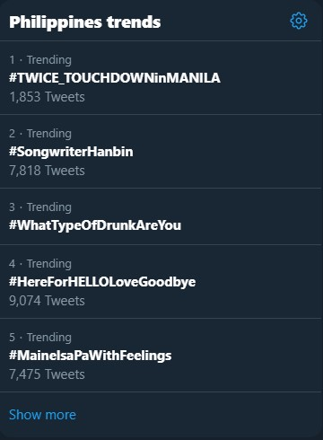

01_A2_ABENALES
My favorite application will be Twitter. I love to use it because I can post whatever I'm feeling that time. I can post random stuff there without anyone judging me. I post my personal feeling or experiences there especially when I'm fangirling. But still, some people can't stop giving their opinions or comments about it and I really don't care. I also use Twitter to comfort random people who feel sad or alone or depress based on their tweets. I also give some tips or advice about some things that the people I get to interact shared with me. My first Twitter account was created last Summer 2010 but then I deleted it because I got insecure about someone on Twitter. Then I created new account last May 2015 to communicate with my classmates and friends who prefer Twitter than Facebook. Another reason why I love using Twitter is my family who is in older generation doesn't like Twitter as much as they like Facebook. For some of them, they find it difficult to use. Some of the features of Twitter are:
Tweet - use to post or share something on your account,
Retweet - use to re-post someone's tweet,
Like - your reaction towards someone's tweet,
Trending Topics – use to bring you the latest or “trending” in the Twitter world,

DM or Direct Message - use to communicate privately with someone,
Follow - to follow or to be updated one someone's tweet.